knitr::opts_chunk$set(echo = TRUE)OR568_Midterm_2026_0310
Setup/Load Data
pacman::p_load(dplyr, skimr, tidyverse, caret, glmnet, janitor, ggplot2, lubridate, purrr,broom)
enriched_flights_NEW_2019 <- read.csv("C:\\Users\\valso\\OneDrive - George Mason University - O365 Production\\2026_T1\\GitHub Clone\\OR568_ML_Project\\shared-notebooks\\notebooks\\val\\r\\enriched_flights_NEW.csv",
stringsAsFactors = FALSE)Data Prep
#Assign imported dataset
flights_raw <- enriched_flights_NEW_2019 %>%
clean_names()
#Select columns to keep
bts_info <- c("year","month","dayof_month","day_of_week","flight_date","origin","dest","cancelled","dep_time_blk","crs_dep_time", "dep_time","dep_delay","taxi_out","wheels_off","air_time","wheels_on","arr_time_blk","crs_arr_time", "arr_time","arr_delay","taxi_in","distance","reporting_airline","dot_id_reporting_airline","iata_code_reporting_airline","tail_number")
arr_weather_info <- c("arr_tmpf","arr_dwpf","arr_relh","arr_sknt","arr_vsby")
dep_weather_info <- c("dep_tmpf","dep_dwpf","dep_relh","dep_sknt","dep_vsby")
plane_info <- c("aircraft_manufacturer","aircraft_model","aircraft_type","weight_category","num_engines","engine_type")
flights_filtered <- flights_raw %>%
select(bts_info, arr_weather_info, dep_weather_info, plane_info) %>%
# create flag for previous flight delayed
mutate(
dep_ts = ymd_hm(paste(flight_date, sprintf("%04d", dep_time))),
arr_ts = ymd_hm(paste(flight_date, sprintf("%04d", arr_time))),
# Fix overnight arrivals (arr_time < dep_time)
arr_ts = if_else(arr_ts < dep_ts, arr_ts + days(1), arr_ts)
) %>%
arrange(tail_number, dep_ts) %>%
group_by(tail_number) %>%
mutate(
prev_arr_delay = lag(arr_delay),
prev_arr_ts = lag(arr_ts),
time_since_prev = as.numeric(difftime(dep_ts, prev_arr_ts, units = "hours")),
prev_flight_late = prev_arr_delay > 15 & time_since_prev <= 8
) %>%
ungroup() %>%
mutate(
is_dep_delay = factor(dep_delay > 15, levels = c(FALSE, TRUE)),
is_arr_delay = factor(arr_delay > 15, levels = c(FALSE, TRUE)),
hour_of_day = dep_time %/% 100,
# Fallback to lubridate if day_of_week column is absent
is_weekend = day_of_week %in% c("6", "7"),
) %>%
group_by(hour_of_day) %>%
mutate(congestion = n()) %>%
ungroup %>%
filter(cancelled == '0')Warning: Using an external vector in selections was deprecated in tidyselect 1.1.0.
ℹ Please use `all_of()` or `any_of()` instead.
# Was:
data %>% select(bts_info)
# Now:
data %>% select(all_of(bts_info))
See <https://tidyselect.r-lib.org/reference/faq-external-vector.html>.Warning: Using an external vector in selections was deprecated in tidyselect 1.1.0.
ℹ Please use `all_of()` or `any_of()` instead.
# Was:
data %>% select(arr_weather_info)
# Now:
data %>% select(all_of(arr_weather_info))
See <https://tidyselect.r-lib.org/reference/faq-external-vector.html>.Warning: Using an external vector in selections was deprecated in tidyselect 1.1.0.
ℹ Please use `all_of()` or `any_of()` instead.
# Was:
data %>% select(dep_weather_info)
# Now:
data %>% select(all_of(dep_weather_info))
See <https://tidyselect.r-lib.org/reference/faq-external-vector.html>.Warning: Using an external vector in selections was deprecated in tidyselect 1.1.0.
ℹ Please use `all_of()` or `any_of()` instead.
# Was:
data %>% select(plane_info)
# Now:
data %>% select(all_of(plane_info))
See <https://tidyselect.r-lib.org/reference/faq-external-vector.html>.Warning: There were 2 warnings in `mutate()`.
The first warning was:
ℹ In argument: `dep_ts = ymd_hm(paste(flight_date, sprintf("%04d",
dep_time)))`.
Caused by warning:
! 5113 failed to parse.
ℹ Run `dplyr::last_dplyr_warnings()` to see the 1 remaining warning.# Define the 5-fold Cross-Validation strategy
set.seed(42)
train_control <- trainControl(method = "cv", number = 5)Models
Departure Delay
# Limit data to relevant variables
dep_flight_filtered <- flights_filtered %>%
filter(cancelled == '0') %>%
filter(origin == "BWI", dest == "JFK") %>%
select(c("dep_delay","is_dep_delay","prev_flight_late","dep_tmpf","dep_relh","dep_vsby","reporting_airline","dep_time_blk","is_weekend")) %>%
# Scale weather vars
mutate(across(all_of(c("dep_tmpf","dep_relh","dep_vsby")), ~ as.numeric(scale(.))))
dep_flight <- dep_flight_filtered %>%
filter(
!is.na(dep_delay),
!is.na(prev_flight_late),
dep_delay >= -60,
dep_delay <= 1440
)Regression
Linear
model_lm <- train(
dep_delay ~ prev_flight_late + dep_tmpf + dep_relh + dep_vsby + reporting_airline + dep_time_blk + is_weekend,
data = dep_flight, method = "lm", trControl = train_control
)
interpret_lm <- function(model) {
tidy(model$finalModel) %>%
mutate(
abs_estimate = abs(estimate)
) %>%
arrange(desc(abs_estimate))
}
interpret_lm(model_lm)# A tibble: 18 × 6
term estimate std.error statistic p.value abs_estimate
<chr> <dbl> <dbl> <dbl> <dbl> <dbl>
1 prev_flight_lateTRUE 37.4 3.93 9.53 5.41e-21 37.4
2 `dep_time_blk1300-1359` -16.4 56.9 -0.289 7.73e- 1 16.4
3 `dep_time_blk0700-0759` -11.4 55.1 -0.207 8.36e- 1 11.4
4 reporting_airlineMQ -9.69 5.58 -1.74 8.25e- 2 9.69
5 `dep_time_blk1800-1859` 9.03 52.2 0.173 8.63e- 1 9.03
6 `dep_time_blk1200-1259` 8.23 51.8 0.159 8.74e- 1 8.23
7 `dep_time_blk1900-1959` 7.61 52.1 0.146 8.84e- 1 7.61
8 is_weekendTRUE -7.57 2.86 -2.65 8.15e- 3 7.57
9 `dep_time_blk1100-1159` 6.93 51.8 0.134 8.94e- 1 6.93
10 `dep_time_blk1500-1559` 4.99 52.5 0.0950 9.24e- 1 4.99
11 `dep_time_blk1400-1459` 4.00 52.2 0.0766 9.39e- 1 4.00
12 (Intercept) 2.93 52.0 0.0564 9.55e- 1 2.93
13 dep_tmpf -2.35 1.31 -1.79 7.30e- 2 2.35
14 `dep_time_blk0900-0959` 2.32 52.0 0.0445 9.64e- 1 2.32
15 dep_relh -2.11 1.53 -1.37 1.70e- 1 2.11
16 `dep_time_blk1700-1759` 1.36 55.1 0.0247 9.80e- 1 1.36
17 `dep_time_blk0600-0659` -0.647 52.0 -0.0124 9.90e- 1 0.647
18 dep_vsby 0.490 1.45 0.337 7.36e- 1 0.490Model Ridge
model_ridge <- train(
dep_delay ~ prev_flight_late + dep_tmpf + dep_relh + dep_vsby + reporting_airline + dep_time_blk + is_weekend,
data = dep_flight, method = "glmnet",
tuneGrid = expand.grid(alpha = 0, lambda = seq(0, 1, by = 0.1)),
trControl = train_control
)
interpret_glmnet <- function(model) {
lambda <- model$bestTune$lambda
coefs <- coef(model$finalModel, s = lambda)
tibble(
variable = rownames(coefs),
coefficient = as.numeric(coefs)
) %>%
filter(variable != "(Intercept)") %>%
mutate(abs_coef = abs(coefficient)) %>%
arrange(desc(abs_coef))
}
interpret_glmnet(model_ridge)# A tibble: 17 × 3
variable coefficient abs_coef
<chr> <dbl> <dbl>
1 prev_flight_lateTRUE 36.6 36.6
2 dep_time_blk1300-1359 -20.3 20.3
3 dep_time_blk0700-0759 -15.4 15.4
4 reporting_airlineMQ -8.84 8.84
5 is_weekendTRUE -7.41 7.41
6 dep_time_blk0600-0659 -4.97 4.97
7 dep_time_blk1800-1859 4.51 4.51
8 dep_time_blk1200-1259 3.41 3.41
9 dep_time_blk1700-1759 -3.21 3.21
10 dep_time_blk1900-1959 3.17 3.17
11 dep_tmpf -2.29 2.29
12 dep_time_blk0900-0959 -2.10 2.10
13 dep_relh -2.04 2.04
14 dep_time_blk1100-1159 1.65 1.65
15 dep_time_blk1500-1559 0.619 0.619
16 dep_vsby 0.506 0.506
17 dep_time_blk1400-1459 -0.405 0.405Lasso
model_lasso <- train(
dep_delay ~ prev_flight_late + dep_tmpf + dep_relh + dep_vsby + reporting_airline + dep_time_blk + is_weekend,
data = dep_flight, method = "glmnet",
tuneGrid = expand.grid(alpha = 1, lambda = seq(0, 1, by = 0.1)),
trControl = train_control
)
interpret_glmnet(model_lasso)# A tibble: 17 × 3
variable coefficient abs_coef
<chr> <dbl> <dbl>
1 prev_flight_lateTRUE 35.9 35.9
2 dep_time_blk1300-1359 -10.9 10.9
3 dep_time_blk0700-0759 -7.44 7.44
4 is_weekendTRUE -6.59 6.59
5 reporting_airlineMQ -5.58 5.58
6 dep_time_blk1800-1859 3.65 3.65
7 dep_time_blk0600-0659 -3.25 3.25
8 dep_time_blk1900-1959 2.79 2.79
9 dep_time_blk1200-1259 1.96 1.96
10 dep_relh -1.76 1.76
11 dep_tmpf -1.73 1.73
12 dep_time_blk0900-0959 -0.279 0.279
13 dep_vsby 0.221 0.221
14 dep_time_blk1100-1159 0 0
15 dep_time_blk1400-1459 0 0
16 dep_time_blk1500-1559 0 0
17 dep_time_blk1700-1759 0 0 Elastic Net
model_enet <- train(
dep_delay ~ prev_flight_late + dep_tmpf + dep_relh + dep_vsby + reporting_airline + dep_time_blk + is_weekend,
data = dep_flight, method = "glmnet",
trControl = train_control
)
interpret_glmnet(model_enet)# A tibble: 17 × 3
variable coefficient abs_coef
<chr> <dbl> <dbl>
1 prev_flight_lateTRUE 35.2 35.2
2 dep_time_blk1300-1359 -15.3 15.3
3 dep_time_blk0700-0759 -11.2 11.2
4 is_weekendTRUE -6.87 6.87
5 reporting_airlineMQ -6.46 6.46
6 dep_time_blk0600-0659 -4.04 4.04
7 dep_time_blk1800-1859 3.98 3.98
8 dep_time_blk1900-1959 2.96 2.96
9 dep_time_blk1200-1259 2.35 2.35
10 dep_tmpf -1.95 1.95
11 dep_relh -1.82 1.82
12 dep_time_blk0900-0959 -1.23 1.23
13 dep_vsby 0.390 0.390
14 dep_time_blk1700-1759 -0.0357 0.0357
15 dep_time_blk1100-1159 0 0
16 dep_time_blk1400-1459 0 0
17 dep_time_blk1500-1559 0 0 Classification
Logistic Regression
model_logit <- train(
is_dep_delay ~ prev_flight_late + dep_tmpf + dep_relh + dep_vsby + reporting_airline + dep_time_blk + is_weekend,
data = dep_flight, method = "glm",
family = "binomial",
trControl = train_control
)Warning in predict.lm(object, newdata, se.fit, scale = 1, type = if (type == :
prediction from rank-deficient fit; attr(*, "non-estim") has doubtful casessummary(model_logit)
Call:
NULL
Coefficients:
Estimate Std. Error z value Pr(>|z|)
(Intercept) -15.36404 2399.54482 -0.006 0.99489
prev_flight_lateTRUE 3.19338 0.19717 16.196 < 2e-16 ***
dep_tmpf -0.04197 0.09004 -0.466 0.64115
dep_relh -0.13446 0.10094 -1.332 0.18282
dep_vsby -0.07003 0.09468 -0.740 0.45954
reporting_airlineMQ -1.18982 0.39940 -2.979 0.00289 **
`dep_time_blk0600-0659` 11.96723 2399.54484 0.005 0.99602
`dep_time_blk0700-0759` -2.41711 2512.48665 -0.001 0.99923
`dep_time_blk0900-0959` 12.91846 2399.54483 0.005 0.99570
`dep_time_blk1100-1159` 13.98135 2399.54480 0.006 0.99535
`dep_time_blk1200-1259` 13.19854 2399.54481 0.006 0.99561
`dep_time_blk1300-1359` -2.63009 2566.55474 -0.001 0.99918
`dep_time_blk1400-1459` 12.88164 2399.54485 0.005 0.99572
`dep_time_blk1500-1559` 13.43323 2399.54486 0.006 0.99553
`dep_time_blk1700-1759` -0.54068 2544.98993 0.000 0.99983
`dep_time_blk1800-1859` 13.39346 2399.54484 0.006 0.99555
`dep_time_blk1900-1959` 13.55423 2399.54483 0.006 0.99549
is_weekendTRUE -0.64285 0.21580 -2.979 0.00289 **
---
Signif. codes: 0 '***' 0.001 '**' 0.01 '*' 0.05 '.' 0.1 ' ' 1
(Dispersion parameter for binomial family taken to be 1)
Null deviance: 1291.71 on 1661 degrees of freedom
Residual deviance: 945.64 on 1644 degrees of freedom
AIC: 981.64
Number of Fisher Scoring iterations: 15PCA
# Select numeric columns; drop zero-variance and NA rows
pca_input <- dep_flight %>%
select(dep_delay, dep_tmpf, dep_relh, dep_vsby) %>%
select(where(~ n_distinct(.) > 1)) %>%
drop_na()
pca_results <- prcomp(pca_input, scale. = TRUE)
summary(pca_results)Importance of components:
PC1 PC2 PC3 PC4
Standard deviation 1.2346 1.0191 0.9737 0.6993
Proportion of Variance 0.3811 0.2596 0.2370 0.1222
Cumulative Proportion 0.3811 0.6407 0.8778 1.0000plot(pca_results, type = "l", main = "PCA Variance Explained")biplot(pca_results, cex = 0.7, main = "PCA: Flight Feature Relationships")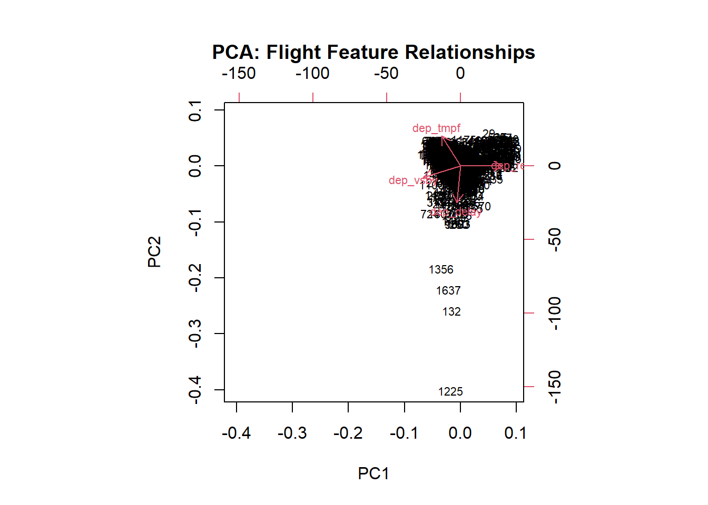
Model Comparison
results <- resamples(list(
Linear = model_lm,
Ridge = model_ridge,
Lasso = model_lasso,
ElasticNet = model_enet
))
print(dotplot(results, metric = "Rsquared", main = "Model Comparison: R-squared"))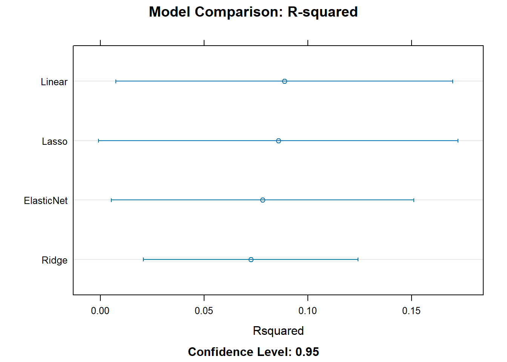
# Predicted vs Actual — Linear Regression
dep_flight$predictions <- predict(model_lm, newdata = dep_flight)
ggplot(dep_flight, aes(x = dep_delay, y = predictions)) +
geom_point(alpha = 0.4, color = "darkgreen") +
geom_abline(slope = 1, intercept = 0, linetype = "dashed", color = "red") +
labs(
title = "Linear Regression: Actual vs. Predicted Departure Delay",
x = "Actual Departure Delay (min)",
y = "Predicted Departure Delay (min)"
) +
theme_minimal()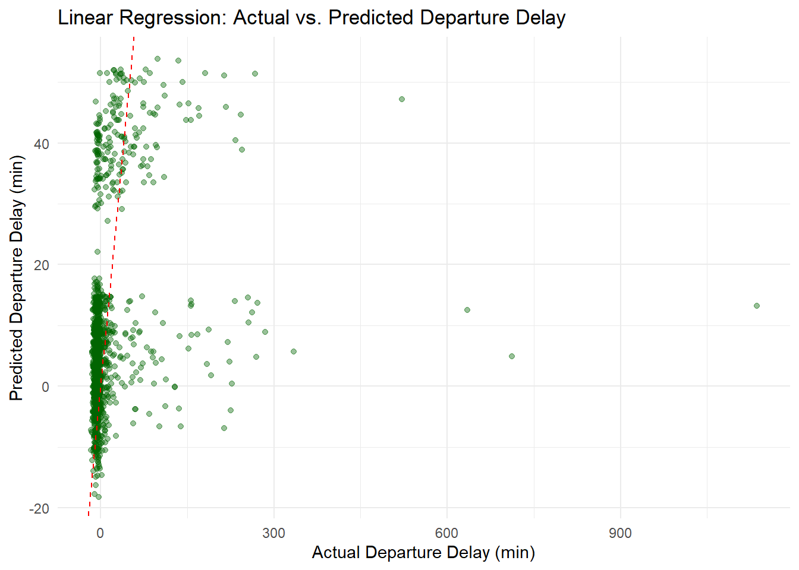
# Confusion Matrix — Logistic Regression
logit_preds <- predict(model_logit, dep_flight)
confusionMatrix(logit_preds, dep_flight$is_dep_delay)Confusion Matrix and Statistics
Reference
Prediction FALSE TRUE
FALSE 1420 114
TRUE 24 104
Accuracy : 0.917
95% CI : (0.9027, 0.9298)
No Information Rate : 0.8688
P-Value [Acc > NIR] : 4.515e-10
Kappa : 0.5583
Mcnemar's Test P-Value : 3.559e-14
Sensitivity : 0.9834
Specificity : 0.4771
Pos Pred Value : 0.9257
Neg Pred Value : 0.8125
Prevalence : 0.8688
Detection Rate : 0.8544
Detection Prevalence : 0.9230
Balanced Accuracy : 0.7302
'Positive' Class : FALSE
Departure Delay where the Incoming Flight is not Delayed
# Filter to where incoming flight is not late
dep_flight <- dep_flight %>%
filter(prev_flight_late == FALSE)Linear Regression
model_lm <- train(
dep_delay ~ dep_tmpf + dep_relh + dep_vsby + reporting_airline + dep_time_blk + is_weekend,
data = dep_flight, method = "lm", trControl = train_control
)Warning in predict.lm(modelFit, newdata): prediction from rank-deficient fit;
attr(*, "non-estim") has doubtful casesinterpret_lm(model_lm)# A tibble: 17 × 6
term estimate std.error statistic p.value abs_estimate
<chr> <dbl> <dbl> <dbl> <dbl> <dbl>
1 reporting_airlineMQ -9.49 5.82 -1.63 0.103 9.49
2 `dep_time_blk1300-1359` -9.47 56.2 -0.169 0.866 9.47
3 `dep_time_blk1200-1259` 8.95 50.2 0.178 0.858 8.95
4 `dep_time_blk0700-0759` -6.65 53.7 -0.124 0.902 6.65
5 `dep_time_blk1100-1159` 6.47 50.1 0.129 0.897 6.47
6 `dep_time_blk1900-1959` 6.26 50.5 0.124 0.901 6.26
7 is_weekendTRUE -6.15 2.94 -2.09 0.0364 6.15
8 `dep_time_blk0600-0659` 4.65 50.4 0.0923 0.926 4.65
9 `dep_time_blk1800-1859` 4.54 50.6 0.0898 0.928 4.54
10 `dep_time_blk1400-1459` 3.56 50.6 0.0703 0.944 3.56
11 (Intercept) 2.85 50.3 0.0567 0.955 2.85
12 dep_tmpf -2.17 1.35 -1.61 0.108 2.17
13 `dep_time_blk1500-1559` -2.15 51.0 -0.0422 0.966 2.15
14 `dep_time_blk0900-0959` -1.85 50.4 -0.0367 0.971 1.85
15 dep_relh -1.02 1.60 -0.639 0.523 1.02
16 `dep_time_blk1700-1759` -0.388 53.4 -0.00726 0.994 0.388
17 dep_vsby 0.113 1.54 0.0729 0.942 0.113Ridge
model_ridge <- train(
dep_delay ~ dep_tmpf + dep_relh + dep_vsby + reporting_airline + dep_time_blk + is_weekend,
data = dep_flight, method = "glmnet",
tuneGrid = expand.grid(alpha = 0, lambda = seq(0, 1, by = 0.1)),
trControl = train_control
)
interpret_glmnet(model_ridge)# A tibble: 16 × 3
variable coefficient abs_coef
<chr> <dbl> <dbl>
1 dep_time_blk1300-1359 -13.2 13.2
2 dep_time_blk0700-0759 -10.4 10.4
3 reporting_airlineMQ -8.73 8.73
4 is_weekendTRUE -6.03 6.03
5 dep_time_blk1500-1559 -5.99 5.99
6 dep_time_blk0900-0959 -5.73 5.73
7 dep_time_blk1200-1259 4.59 4.59
8 dep_time_blk1700-1759 -4.36 4.36
9 dep_time_blk1900-1959 2.26 2.26
10 dep_tmpf -2.12 2.12
11 dep_time_blk1100-1159 1.71 1.71
12 dep_relh -0.980 0.980
13 dep_time_blk0600-0659 0.663 0.663
14 dep_time_blk1800-1859 0.554 0.554
15 dep_time_blk1400-1459 -0.382 0.382
16 dep_vsby 0.130 0.130Lasso
model_lasso <- train(
dep_delay ~ dep_tmpf + dep_relh + dep_vsby + reporting_airline + dep_time_blk + is_weekend,
data = dep_flight, method = "glmnet",
tuneGrid = expand.grid(alpha = 1, lambda = seq(0, 1, by = 0.1)),
trControl = train_control
)
interpret_glmnet(model_lasso)# A tibble: 16 × 3
variable coefficient abs_coef
<chr> <dbl> <dbl>
1 is_weekendTRUE -4.04 4.04
2 reporting_airlineMQ -4.04 4.04
3 dep_time_blk0900-0959 -3.49 3.49
4 dep_time_blk1200-1259 1.26 1.26
5 dep_tmpf -1.05 1.05
6 dep_time_blk1900-1959 0.0802 0.0802
7 dep_time_blk1500-1559 -0.0157 0.0157
8 dep_relh 0 0
9 dep_vsby 0 0
10 dep_time_blk0600-0659 0 0
11 dep_time_blk0700-0759 0 0
12 dep_time_blk1100-1159 0 0
13 dep_time_blk1300-1359 0 0
14 dep_time_blk1400-1459 0 0
15 dep_time_blk1700-1759 0 0
16 dep_time_blk1800-1859 0 0 Elastic Net
model_enet <- train(
dep_delay ~ dep_tmpf + dep_relh + dep_vsby + reporting_airline + dep_time_blk + is_weekend,
data = dep_flight, method = "glmnet",
trControl = train_control
)
interpret_glmnet(model_enet)# A tibble: 16 × 3
variable coefficient abs_coef
<chr> <dbl> <dbl>
1 reporting_airlineMQ -5.77 5.77
2 is_weekendTRUE -4.99 4.99
3 dep_time_blk0900-0959 -4.67 4.67
4 dep_time_blk1500-1559 -2.60 2.60
5 dep_time_blk1300-1359 -2.59 2.59
6 dep_time_blk1200-1259 2.45 2.45
7 dep_time_blk0700-0759 -2.19 2.19
8 dep_tmpf -1.53 1.53
9 dep_time_blk1900-1959 0.879 0.879
10 dep_relh -0.369 0.369
11 dep_vsby 0 0
12 dep_time_blk0600-0659 0 0
13 dep_time_blk1100-1159 0 0
14 dep_time_blk1400-1459 0 0
15 dep_time_blk1700-1759 0 0
16 dep_time_blk1800-1859 0 0 Logistic Regression
model_logit <- train(
is_dep_delay ~ dep_tmpf + dep_relh + dep_vsby + reporting_airline + dep_time_blk + is_weekend,
data = dep_flight, method = "glm",
family = "binomial",
trControl = train_control
)Warning in predict.lm(object, newdata, se.fit, scale = 1, type = if (type == :
prediction from rank-deficient fit; attr(*, "non-estim") has doubtful casessummary(model_logit)
Call:
NULL
Coefficients:
Estimate Std. Error z value Pr(>|z|)
(Intercept) -15.61440 2399.54477 -0.007 0.9948
dep_tmpf -0.04426 0.10956 -0.404 0.6863
dep_relh -0.12684 0.12644 -1.003 0.3158
dep_vsby -0.16943 0.11182 -1.515 0.1297
reporting_airlineMQ -0.90650 0.53168 -1.705 0.0882 .
`dep_time_blk0600-0659` 13.38850 2399.54478 0.006 0.9955
`dep_time_blk0700-0759` -0.95122 2564.42091 0.000 0.9997
`dep_time_blk0900-0959` 12.60696 2399.54478 0.005 0.9958
`dep_time_blk1100-1159` 13.39402 2399.54474 0.006 0.9955
`dep_time_blk1200-1259` 13.39693 2399.54475 0.006 0.9955
`dep_time_blk1300-1359` -0.77016 2681.25159 0.000 0.9998
`dep_time_blk1400-1459` 13.41069 2399.54480 0.006 0.9955
`dep_time_blk1500-1559` 12.78290 2399.54488 0.005 0.9957
`dep_time_blk1700-1759` -0.33852 2544.80675 0.000 0.9999
`dep_time_blk1800-1859` 13.28899 2399.54479 0.006 0.9956
`dep_time_blk1900-1959` 13.79103 2399.54478 0.006 0.9954
is_weekendTRUE -0.62765 0.26936 -2.330 0.0198 *
---
Signif. codes: 0 '***' 0.001 '**' 0.01 '*' 0.05 '.' 0.1 ' ' 1
(Dispersion parameter for binomial family taken to be 1)
Null deviance: 734.83 on 1462 degrees of freedom
Residual deviance: 704.51 on 1446 degrees of freedom
AIC: 738.51
Number of Fisher Scoring iterations: 15PCA
# Select numeric columns; drop zero-variance and NA rows
pca_input <- dep_flight %>%
select(dep_delay, dep_tmpf, dep_relh, dep_vsby) %>%
select(where(~ n_distinct(.) > 1)) %>%
drop_na()
pca_results <- prcomp(pca_input, scale. = TRUE)
summary(pca_results)Importance of components:
PC1 PC2 PC3 PC4
Standard deviation 1.236 1.0180 0.9717 0.7011
Proportion of Variance 0.382 0.2591 0.2361 0.1229
Cumulative Proportion 0.382 0.6410 0.8771 1.0000plot(pca_results, type = "l", main = "PCA Variance Explained")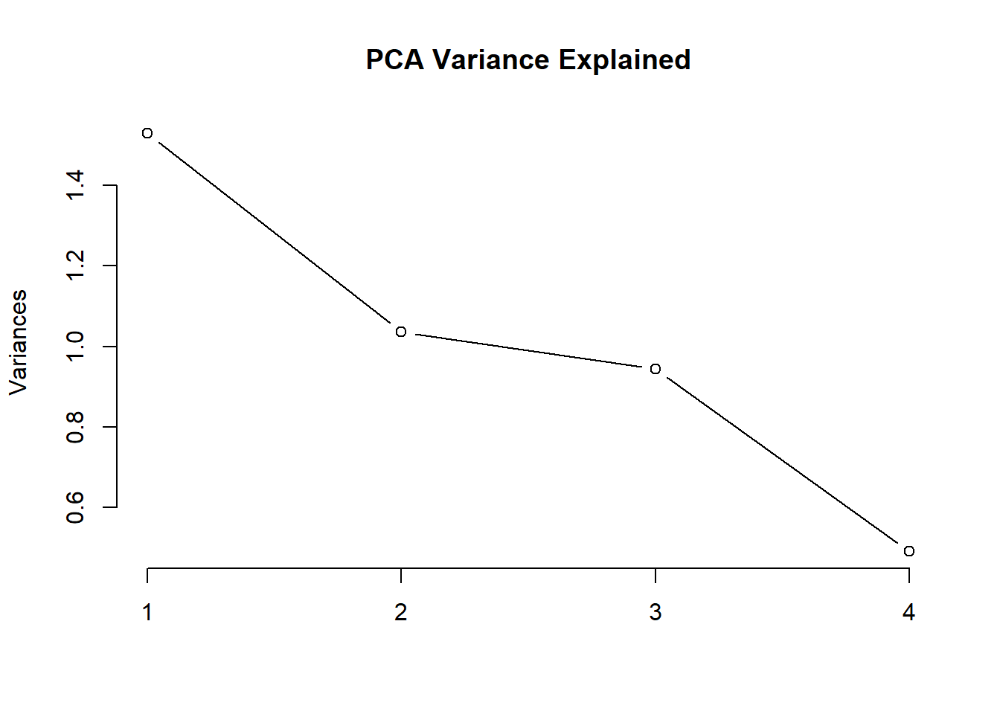
biplot(pca_results, cex = 0.7, main = "PCA: Flight Feature Relationships")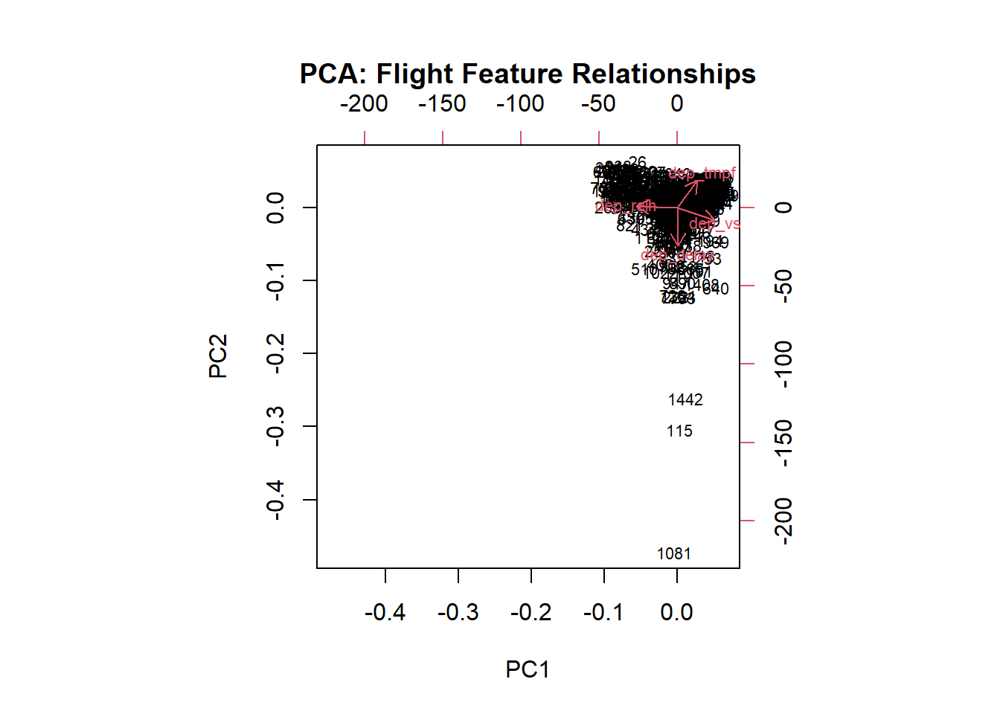
Model Result Comparison
results <- resamples(list(
Linear = model_lm,
Ridge = model_ridge,
Lasso = model_lasso,
ElasticNet = model_enet
))
print(dotplot(results, metric = "Rsquared", main = "Model Comparison: R-squared"))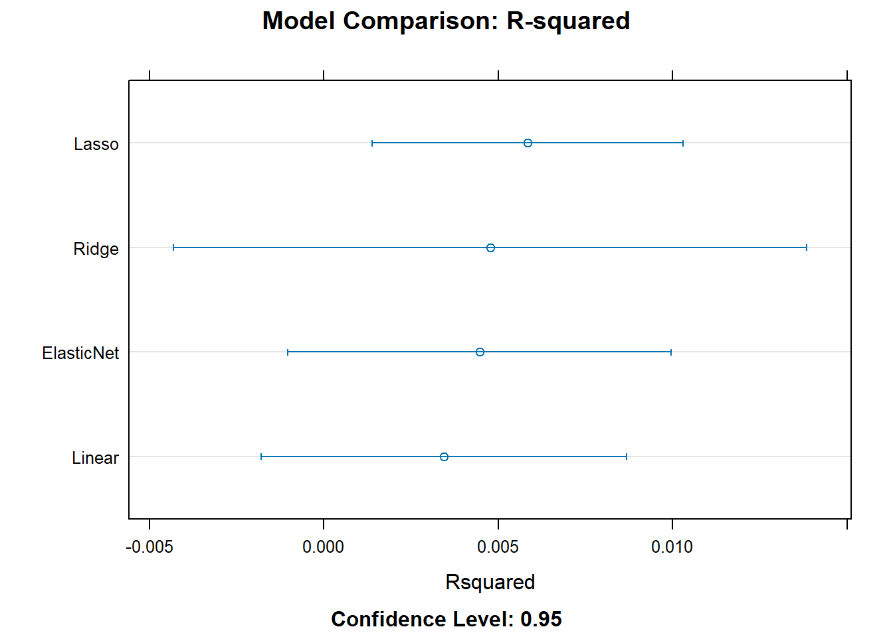
Plot Predicted vs Actual
# Predicted vs Actual — Linear Regression
dep_flight$predictions <- predict(model_lm, newdata = dep_flight)
ggplot(dep_flight, aes(x = dep_delay, y = predictions)) +
geom_point(alpha = 0.4, color = "darkgreen") +
geom_abline(slope = 1, intercept = 0, linetype = "dashed", color = "red") +
labs(
title = "Linear Regression: Actual vs. Predicted Departure Delay - Where Previous Flight was not Delayed",
x = "Actual Departure Delay (min)",
y = "Predicted Departure Delay (min)"
) +
theme_minimal()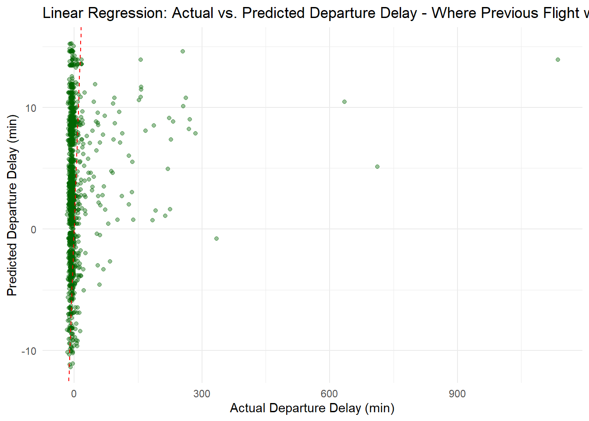
Confusion Matrix
# Confusion Matrix — Logistic Regression
logit_preds <- predict(model_logit, dep_flight)
confusionMatrix(logit_preds, dep_flight$is_dep_delay)Confusion Matrix and Statistics
Reference
Prediction FALSE TRUE
FALSE 1362 101
TRUE 0 0
Accuracy : 0.931
95% CI : (0.9167, 0.9434)
No Information Rate : 0.931
P-Value [Acc > NIR] : 0.5264
Kappa : 0
Mcnemar's Test P-Value : <2e-16
Sensitivity : 1.000
Specificity : 0.000
Pos Pred Value : 0.931
Neg Pred Value : NaN
Prevalence : 0.931
Detection Rate : 0.931
Detection Prevalence : 1.000
Balanced Accuracy : 0.500
'Positive' Class : FALSE
Arrival Delay
# Limit data to relevant variables
arr_flight_filtered <- flights_filtered %>%
filter(cancelled == '0') %>%
filter(origin == "JFK", dest == "BWI") %>%
select(c("arr_delay","is_arr_delay","is_dep_delay","arr_tmpf","arr_relh","arr_vsby","reporting_airline","arr_time_blk","is_weekend")) %>%
# Scale weather vars
mutate(across(all_of(c("arr_tmpf","arr_relh","arr_vsby")), ~ as.numeric(scale(.))))
arr_flight <- arr_flight_filtered %>%
filter(
!is.na(arr_delay),
!is.na(is_dep_delay),
arr_delay >= -60,
arr_delay <= 1440
)Regression
Linear
model_lm <- train(
arr_delay ~ is_dep_delay + arr_tmpf + arr_relh + arr_vsby + reporting_airline + arr_time_blk + is_weekend,
data = arr_flight, method = "lm", trControl = train_control
)Warning in predict.lm(modelFit, newdata): prediction from rank-deficient fit;
attr(*, "non-estim") has doubtful casesinterpret_lm(model_lm)# A tibble: 17 × 6
term estimate std.error statistic p.value abs_estimate
<chr> <dbl> <dbl> <dbl> <dbl> <dbl>
1 is_dep_delayTRUE 97.6 2.63 37.2 1.17e-219 97.6
2 `arr_time_blk2100-2159` -16.4 7.53 -2.18 2.94e- 2 16.4
3 reporting_airlineMQ -12.9 18.5 -0.695 4.87e- 1 12.9
4 `arr_time_blk1000-1059` -11.3 5.56 -2.03 4.29e- 2 11.3
5 `arr_time_blk1800-1859` -10.8 6.32 -1.72 8.65e- 2 10.8
6 `arr_time_blk1900-1959` -9.78 5.82 -1.68 9.28e- 2 9.78
7 `arr_time_blk2300-2359` -9.16 5.86 -1.56 1.18e- 1 9.16
8 (Intercept) -8.39 5.05 -1.66 9.67e- 2 8.39
9 `arr_time_blk1100-1159` -8.20 29.4 -0.278 7.81e- 1 8.20
10 `arr_time_blk1400-1459` -6.65 6.56 -1.01 3.11e- 1 6.65
11 `arr_time_blk1700-1759` 6.43 19.1 0.337 7.36e- 1 6.43
12 `arr_time_blk1500-1559` -5.92 5.71 -1.04 2.99e- 1 5.92
13 arr_tmpf 2.39 1.06 2.25 2.48e- 2 2.39
14 is_weekendTRUE 1.46 2.26 0.647 5.18e- 1 1.46
15 arr_vsby -1.37 1.16 -1.18 2.37e- 1 1.37
16 arr_relh 0.828 1.21 0.684 4.94e- 1 0.828
17 `arr_time_blk2200-2259` 0.255 6.93 0.0368 9.71e- 1 0.255Model Ridge
model_ridge <- train(
arr_delay ~ is_dep_delay + arr_tmpf + arr_relh + arr_vsby + reporting_airline + arr_time_blk + is_weekend,
data = arr_flight, method = "glmnet",
tuneGrid = expand.grid(alpha = 0, lambda = seq(0, 1, by = 0.1)),
trControl = train_control
)
interpret_glmnet(model_ridge)# A tibble: 16 × 3
variable coefficient abs_coef
<chr> <dbl> <dbl>
1 is_dep_delayTRUE 91.0 91.0
2 arr_time_blk2100-2159 -10.8 10.8
3 arr_time_blk1000-1059 -6.41 6.41
4 arr_time_blk1800-1859 -5.87 5.87
5 arr_time_blk1100-1159 -4.61 4.61
6 arr_time_blk2200-2259 4.32 4.32
7 arr_time_blk1900-1959 -4.19 4.19
8 arr_time_blk2300-2359 -3.54 3.54
9 arr_tmpf 2.14 2.14
10 arr_time_blk1400-1459 -2.13 2.13
11 reporting_airlineMQ -1.58 1.58
12 arr_vsby -1.30 1.30
13 is_weekendTRUE 1.13 1.13
14 arr_time_blk1500-1559 -1.12 1.12
15 arr_relh 0.771 0.771
16 arr_time_blk1700-1759 0.605 0.605Lasso
model_lasso <- train(
arr_delay ~ is_dep_delay + arr_tmpf + arr_relh + arr_vsby + reporting_airline + arr_time_blk + is_weekend,
data = arr_flight, method = "glmnet",
tuneGrid = expand.grid(alpha = 1, lambda = seq(0, 1, by = 0.1)),
trControl = train_control
)
interpret_glmnet(model_lasso)# A tibble: 16 × 3
variable coefficient abs_coef
<chr> <dbl> <dbl>
1 is_dep_delayTRUE 94.6 94.6
2 arr_time_blk2200-2259 3.48 3.48
3 arr_time_blk2100-2159 -2.78 2.78
4 arr_time_blk1000-1059 -1.43 1.43
5 arr_tmpf 1.09 1.09
6 arr_vsby -0.873 0.873
7 arr_relh 0 0
8 reporting_airlineMQ 0 0
9 arr_time_blk1100-1159 0 0
10 arr_time_blk1400-1459 0 0
11 arr_time_blk1500-1559 0 0
12 arr_time_blk1700-1759 0 0
13 arr_time_blk1800-1859 0 0
14 arr_time_blk1900-1959 0 0
15 arr_time_blk2300-2359 0 0
16 is_weekendTRUE 0 0 Elastic Net
model_enet <- train(
arr_delay ~ is_dep_delay + arr_tmpf + arr_relh + arr_vsby + reporting_airline + arr_time_blk + is_weekend,
data = arr_flight, method = "glmnet",
trControl = train_control
)
interpret_glmnet(model_enet)# A tibble: 16 × 3
variable coefficient abs_coef
<chr> <dbl> <dbl>
1 is_dep_delayTRUE 95.2 95.2
2 arr_time_blk2200-2259 4.36 4.36
3 arr_time_blk2100-2159 -4.23 4.23
4 arr_time_blk1000-1059 -2.09 2.09
5 arr_tmpf 1.35 1.35
6 arr_vsby -1.12 1.12
7 arr_time_blk1800-1859 -0.673 0.673
8 arr_time_blk1900-1959 -0.0101 0.0101
9 arr_relh 0 0
10 reporting_airlineMQ 0 0
11 arr_time_blk1100-1159 0 0
12 arr_time_blk1400-1459 0 0
13 arr_time_blk1500-1559 0 0
14 arr_time_blk1700-1759 0 0
15 arr_time_blk2300-2359 0 0
16 is_weekendTRUE 0 0 Classification
Logistic Regression
model_logit <- train(
is_arr_delay ~ is_dep_delay + arr_tmpf + arr_relh + arr_vsby + reporting_airline + arr_time_blk + is_weekend,
data = arr_flight, method = "glm",
family = "binomial",
trControl = train_control
)
summary(model_logit)
Call:
NULL
Coefficients:
Estimate Std. Error z value Pr(>|z|)
(Intercept) -3.71910 0.62385 -5.962 2.5e-09 ***
is_dep_delayTRUE 4.65150 0.21039 22.109 < 2e-16 ***
arr_tmpf 0.12429 0.10575 1.175 0.240
arr_relh 0.03336 0.11650 0.286 0.775
arr_vsby -0.12615 0.11270 -1.119 0.263
reporting_airlineMQ 13.30091 613.26236 0.022 0.983
`arr_time_blk1000-1059` 0.35551 0.66310 0.536 0.592
`arr_time_blk1100-1159` -11.65147 1029.12166 -0.011 0.991
`arr_time_blk1400-1459` 0.46637 0.76199 0.612 0.541
`arr_time_blk1500-1559` 0.42699 0.66996 0.637 0.524
`arr_time_blk1700-1759` -12.56993 613.26268 -0.020 0.984
`arr_time_blk1800-1859` 0.29371 0.73560 0.399 0.690
`arr_time_blk1900-1959` 0.81277 0.66669 1.219 0.223
`arr_time_blk2100-2159` 0.49757 0.82588 0.602 0.547
`arr_time_blk2200-2259` 0.06353 0.81890 0.078 0.938
`arr_time_blk2300-2359` 0.11135 0.67240 0.166 0.868
is_weekendTRUE 0.26173 0.22778 1.149 0.251
---
Signif. codes: 0 '***' 0.001 '**' 0.01 '*' 0.05 '.' 0.1 ' ' 1
(Dispersion parameter for binomial family taken to be 1)
Null deviance: 1583.79 on 1652 degrees of freedom
Residual deviance: 748.86 on 1636 degrees of freedom
AIC: 782.86
Number of Fisher Scoring iterations: 14PCA
# Select numeric columns; drop zero-variance and NA rows
pca_input <- arr_flight %>%
select(arr_delay, arr_tmpf, arr_relh, arr_vsby) %>%
select(where(~ n_distinct(.) > 1)) %>%
drop_na()
pca_results <- prcomp(pca_input, scale. = TRUE)
summary(pca_results)Importance of components:
PC1 PC2 PC3 PC4
Standard deviation 1.2487 1.0068 0.9665 0.7022
Proportion of Variance 0.3898 0.2534 0.2335 0.1233
Cumulative Proportion 0.3898 0.6432 0.8767 1.0000plot(pca_results, type = "l", main = "PCA Variance Explained")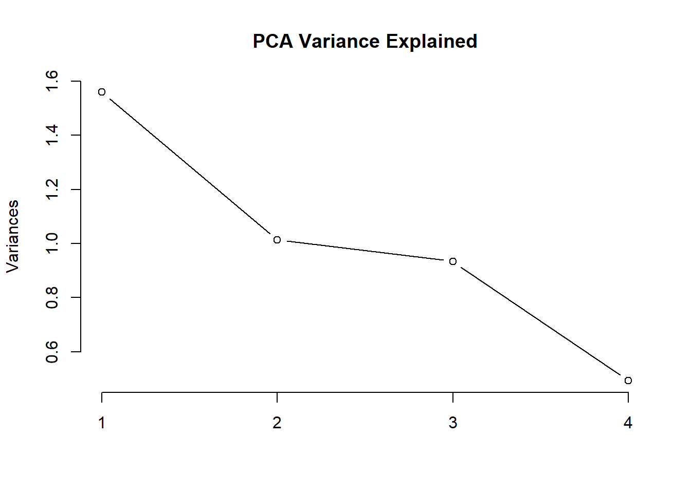
biplot(pca_results, cex = 0.7, main = "PCA: Flight Feature Relationships")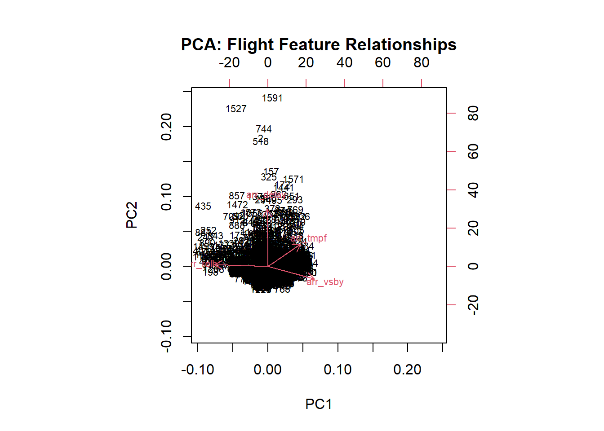
Model Comparison
results <- resamples(list(
Linear = model_lm,
Ridge = model_ridge,
Lasso = model_lasso,
ElasticNet = model_enet
))
print(dotplot(results, metric = "Rsquared", main = "Model Comparison: R-squared"))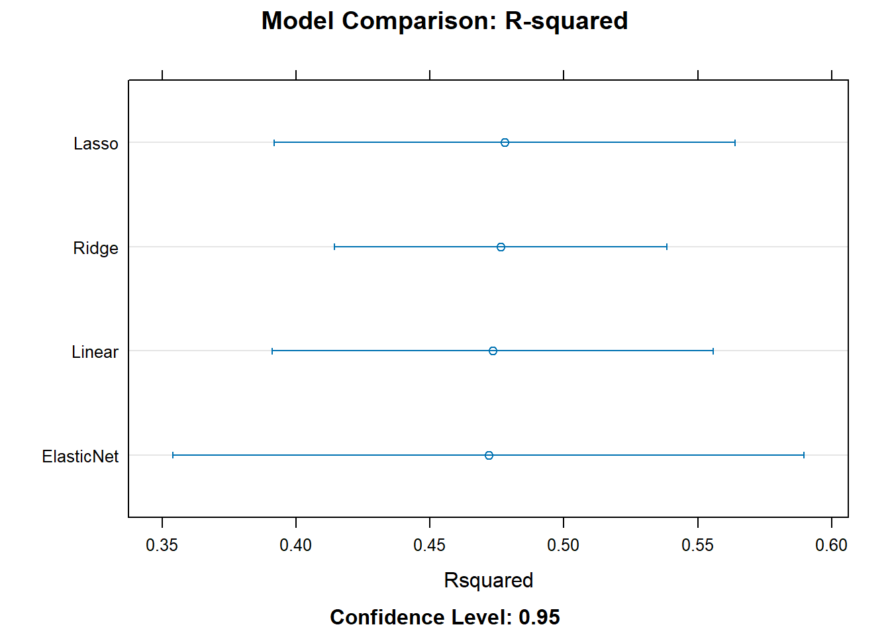
# Predicted vs Actual — Linear Regression
arr_flight$predictions <- predict(model_lm, newdata = arr_flight)
ggplot(arr_flight, aes(x = arr_delay, y = predictions)) +
geom_point(alpha = 0.4, color = "darkgreen") +
geom_abline(slope = 1, intercept = 0, linetype = "dashed", color = "red") +
labs(
title = "Linear Regression: Actual vs. Predicted Arrival Delay",
x = "Actual Arrival Delay (min)",
y = "Predicted Arrival Delay (min)"
) +
theme_minimal()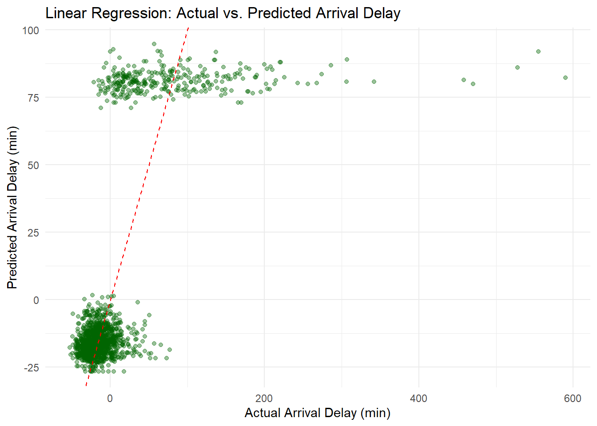
# Confusion Matrix — Logistic Regression
logit_preds <- predict(model_logit, arr_flight)
confusionMatrix(logit_preds, arr_flight$is_arr_delay)Confusion Matrix and Statistics
Reference
Prediction FALSE TRUE
FALSE 1288 55
TRUE 59 251
Accuracy : 0.931
95% CI : (0.9177, 0.9428)
No Information Rate : 0.8149
P-Value [Acc > NIR] : <2e-16
Kappa : 0.7726
Mcnemar's Test P-Value : 0.7787
Sensitivity : 0.9562
Specificity : 0.8203
Pos Pred Value : 0.9590
Neg Pred Value : 0.8097
Prevalence : 0.8149
Detection Rate : 0.7792
Detection Prevalence : 0.8125
Balanced Accuracy : 0.8882
'Positive' Class : FALSE
Arrival Delay where the Flight Departure is not Delayed
# Filter to where flight is not late upon departure
arr_flight <- arr_flight %>%
filter(is_dep_delay == FALSE)Linear Regression
model_lm <- train(
arr_delay ~ arr_tmpf + arr_relh + arr_vsby + reporting_airline + arr_time_blk + is_weekend,
data = arr_flight, method = "lm", trControl = train_control
)Warning in predict.lm(modelFit, newdata): prediction from rank-deficient fit;
attr(*, "non-estim") has doubtful casesinterpret_lm(model_lm)# A tibble: 16 × 6
term estimate std.error statistic p.value abs_estimate
<chr> <dbl> <dbl> <dbl> <dbl> <dbl>
1 `arr_time_blk2300-2359` -12.9 2.50 -5.13 0.000000327 12.9
2 `arr_time_blk2200-2259` -11.3 2.90 -3.91 0.0000989 11.3
3 `arr_time_blk1800-1859` -11.2 2.66 -4.20 0.0000282 11.2
4 `arr_time_blk1100-1159` -10.8 11.7 -0.927 0.354 10.8
5 `arr_time_blk1900-1959` -10.5 2.48 -4.25 0.0000231 10.5
6 `arr_time_blk2100-2159` -10.3 3.23 -3.18 0.00152 10.3
7 `arr_time_blk1000-1059` -9.07 2.32 -3.91 0.0000975 9.07
8 (Intercept) -8.24 2.10 -3.93 0.0000889 8.24
9 `arr_time_blk1500-1559` -5.01 2.40 -2.09 0.0367 5.01
10 `arr_time_blk1400-1459` -4.19 2.73 -1.53 0.125 4.19
11 reporting_airlineMQ -3.10 8.21 -0.377 0.706 3.10
12 `arr_time_blk1700-1759` -2.07 8.41 -0.247 0.805 2.07
13 arr_vsby -1.13 0.505 -2.23 0.0258 1.13
14 is_weekendTRUE 0.765 0.982 0.779 0.436 0.765
15 arr_tmpf 0.491 0.465 1.06 0.290 0.491
16 arr_relh -0.397 0.546 -0.727 0.467 0.397Ridge
model_ridge <- train(
arr_delay ~ arr_tmpf + arr_relh + arr_vsby + reporting_airline + arr_time_blk + is_weekend,
data = arr_flight, method = "glmnet",
tuneGrid = expand.grid(alpha = 0, lambda = seq(0, 1, by = 0.1)),
trControl = train_control
)
interpret_glmnet(model_ridge)# A tibble: 15 × 3
variable coefficient abs_coef
<chr> <dbl> <dbl>
1 arr_time_blk2300-2359 -11.3 11.3
2 arr_time_blk2200-2259 -9.74 9.74
3 arr_time_blk1800-1859 -9.58 9.58
4 arr_time_blk1100-1159 -9.27 9.27
5 arr_time_blk1900-1959 -8.95 8.95
6 arr_time_blk2100-2159 -8.69 8.69
7 arr_time_blk1000-1059 -7.52 7.52
8 arr_time_blk1500-1559 -3.49 3.49
9 arr_time_blk1400-1459 -2.67 2.67
10 reporting_airlineMQ -2.38 2.38
11 arr_time_blk1700-1759 -1.28 1.28
12 arr_vsby -1.11 1.11
13 is_weekendTRUE 0.739 0.739
14 arr_tmpf 0.479 0.479
15 arr_relh -0.383 0.383Lasso
model_lasso <- train(
arr_delay ~ arr_tmpf + arr_relh + arr_vsby + reporting_airline + arr_time_blk + is_weekend,
data = arr_flight, method = "glmnet",
tuneGrid = expand.grid(alpha = 1, lambda = seq(0, 1, by = 0.1)),
trControl = train_control
)
interpret_glmnet(model_lasso)# A tibble: 15 × 3
variable coefficient abs_coef
<chr> <dbl> <dbl>
1 arr_time_blk2300-2359 -12.7 12.7
2 arr_time_blk2200-2259 -11.2 11.2
3 arr_time_blk1800-1859 -11.0 11.0
4 arr_time_blk1100-1159 -10.7 10.7
5 arr_time_blk1900-1959 -10.4 10.4
6 arr_time_blk2100-2159 -10.1 10.1
7 arr_time_blk1000-1059 -8.94 8.94
8 arr_time_blk1500-1559 -4.88 4.88
9 arr_time_blk1400-1459 -4.06 4.06
10 reporting_airlineMQ -3.49 3.49
11 arr_time_blk1700-1759 -1.56 1.56
12 arr_vsby -1.12 1.12
13 is_weekendTRUE 0.763 0.763
14 arr_tmpf 0.491 0.491
15 arr_relh -0.393 0.393Elastic Net
model_enet <- train(
arr_delay ~ arr_tmpf + arr_relh + arr_vsby + reporting_airline + arr_time_blk + is_weekend,
data = arr_flight, method = "glmnet",
trControl = train_control
)
interpret_glmnet(model_enet)# A tibble: 15 × 3
variable coefficient abs_coef
<chr> <dbl> <dbl>
1 arr_time_blk2300-2359 -8.96 8.96
2 arr_time_blk2200-2259 -7.35 7.35
3 arr_time_blk1800-1859 -7.22 7.22
4 arr_time_blk1900-1959 -6.66 6.66
5 arr_time_blk2100-2159 -6.34 6.34
6 arr_time_blk1100-1159 -6.24 6.24
7 arr_time_blk1000-1059 -5.25 5.25
8 reporting_airlineMQ -1.39 1.39
9 arr_time_blk1500-1559 -1.21 1.21
10 arr_vsby -1.05 1.05
11 is_weekendTRUE 0.632 0.632
12 arr_tmpf 0.445 0.445
13 arr_time_blk1400-1459 -0.345 0.345
14 arr_relh -0.310 0.310
15 arr_time_blk1700-1759 -0.000404 0.000404Logistic Regression
model_logit <- train(
is_arr_delay ~ arr_tmpf + arr_relh + arr_vsby + reporting_airline + arr_time_blk + is_weekend,
data = arr_flight, method = "glm",
family = "binomial",
trControl = train_control
)
summary(model_logit)
Call:
NULL
Coefficients:
Estimate Std. Error z value Pr(>|z|)
(Intercept) -4.153e+00 1.012e+00 -4.102 4.1e-05 ***
arr_tmpf -7.662e-03 1.439e-01 -0.053 0.958
arr_relh -1.106e-01 1.704e-01 -0.649 0.516
arr_vsby -1.808e-01 1.381e-01 -1.309 0.190
reporting_airlineMQ 1.271e+01 7.219e+02 0.018 0.986
`arr_time_blk1000-1059` 1.176e+00 1.048e+00 1.122 0.262
`arr_time_blk1100-1159` -1.137e+01 1.029e+03 -0.011 0.991
`arr_time_blk1400-1459` 7.396e-01 1.170e+00 0.632 0.527
`arr_time_blk1500-1559` 7.980e-01 1.082e+00 0.737 0.461
`arr_time_blk1700-1759` -1.164e+01 7.219e+02 -0.016 0.987
`arr_time_blk1800-1859` 1.808e-01 1.238e+00 0.146 0.884
`arr_time_blk1900-1959` 1.615e+00 1.058e+00 1.527 0.127
`arr_time_blk2100-2159` 1.569e+00 1.178e+00 1.332 0.183
`arr_time_blk2200-2259` 5.079e-01 1.243e+00 0.409 0.683
`arr_time_blk2300-2359` -7.820e-01 1.424e+00 -0.549 0.583
is_weekendTRUE 1.632e-01 2.976e-01 0.549 0.583
---
Signif. codes: 0 '***' 0.001 '**' 0.01 '*' 0.05 '.' 0.1 ' ' 1
(Dispersion parameter for binomial family taken to be 1)
Null deviance: 459.2 on 1342 degrees of freedom
Residual deviance: 442.9 on 1327 degrees of freedom
AIC: 474.9
Number of Fisher Scoring iterations: 14PCA
# Select numeric columns; drop zero-variance and NA rows
pca_input <- arr_flight %>%
select(arr_delay, arr_tmpf, arr_relh, arr_vsby) %>%
select(where(~ n_distinct(.) > 1)) %>%
drop_na()
pca_results <- prcomp(pca_input, scale. = TRUE)
summary(pca_results)Importance of components:
PC1 PC2 PC3 PC4
Standard deviation 1.251 1.0265 0.9557 0.6849
Proportion of Variance 0.391 0.2634 0.2283 0.1173
Cumulative Proportion 0.391 0.6544 0.8827 1.0000plot(pca_results, type = "l", main = "PCA Variance Explained")biplot(pca_results, cex = 0.7, main = "PCA: Flight Feature Relationships")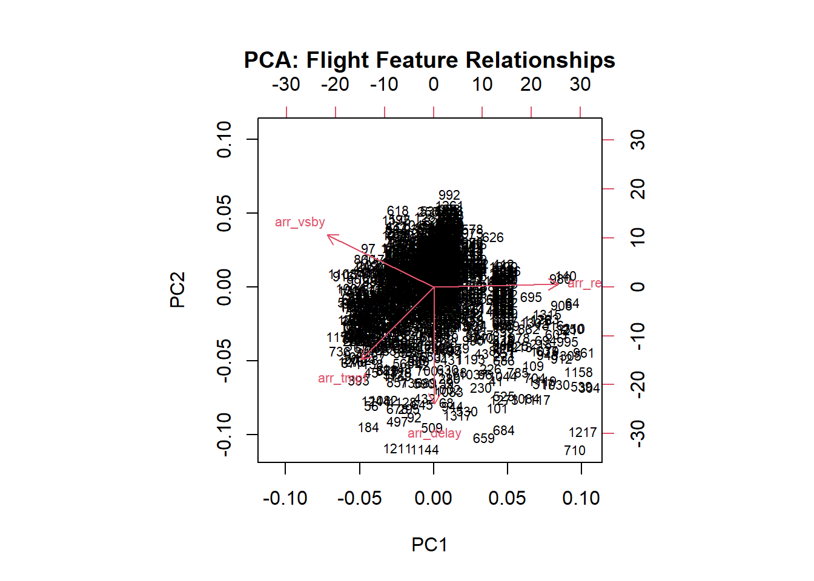
Model Performance Comparison
results <- resamples(list(
Linear = model_lm,
Ridge = model_ridge,
Lasso = model_lasso,
ElasticNet = model_enet
))
print(dotplot(results, metric = "Rsquared", main = "Model Comparison: R-squared"))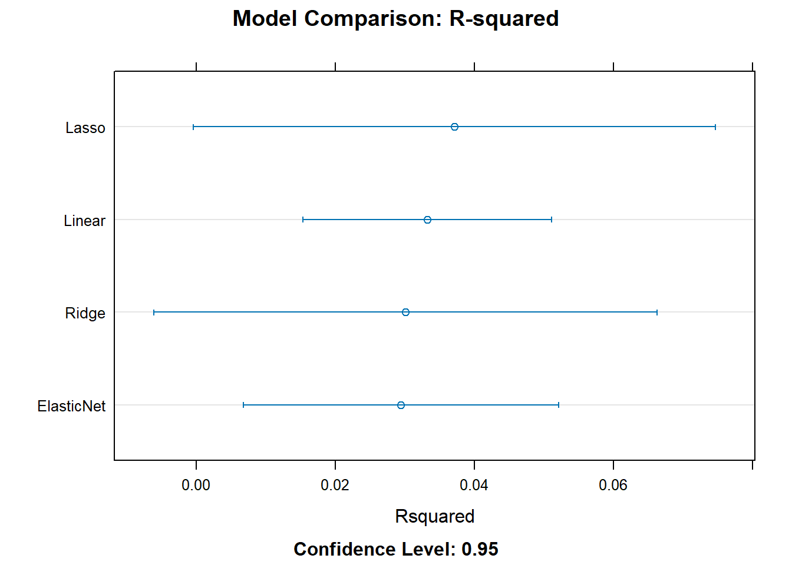
Predicted vs Actual
# Predicted vs Actual — Linear Regression
arr_flight$predictions <- predict(model_lm, newdata = arr_flight)
ggplot(arr_flight, aes(x = arr_delay, y = predictions)) +
geom_point(alpha = 0.4, color = "darkgreen") +
geom_abline(slope = 1, intercept = 0, linetype = "dashed", color = "red") +
labs(
title = "Linear Regression: Actual vs. Predicted Arrival Delay - Where Flight was not Late upon Departure",
x = "Actual Arrival Delay (min)",
y = "Predicted Arrival Delay (min)"
) +
theme_minimal()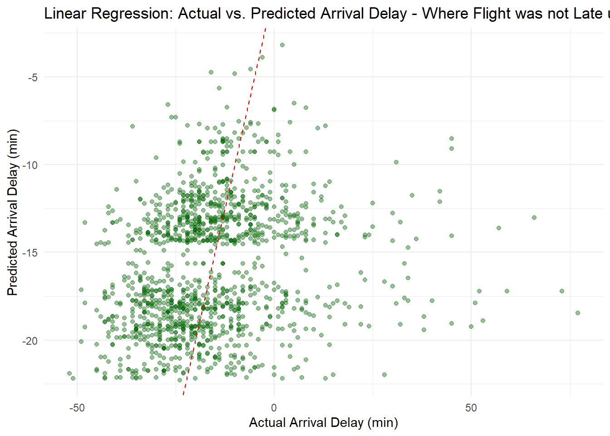
Confusion Matrix
# Confusion Matrix — Logistic Regression
logit_preds <- predict(model_logit, arr_flight)
confusionMatrix(logit_preds, arr_flight$is_arr_delay)Confusion Matrix and Statistics
Reference
Prediction FALSE TRUE
FALSE 1288 55
TRUE 0 0
Accuracy : 0.959
95% CI : (0.947, 0.969)
No Information Rate : 0.959
P-Value [Acc > NIR] : 0.5358
Kappa : 0
Mcnemar's Test P-Value : 3.305e-13
Sensitivity : 1.000
Specificity : 0.000
Pos Pred Value : 0.959
Neg Pred Value : NaN
Prevalence : 0.959
Detection Rate : 0.959
Detection Prevalence : 1.000
Balanced Accuracy : 0.500
'Positive' Class : FALSE